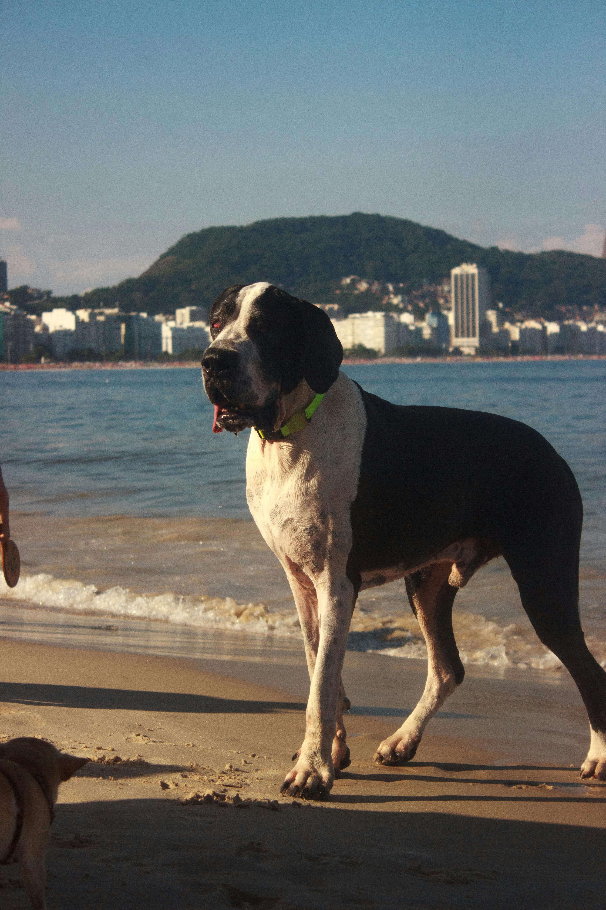

Great Dane
140 pounds of sincerity. Zero awareness of size.

Great Danes are often called gentle giants, and for once the nickname undersells it — these are some of the most affectionate, people-oriented dogs you'll find, with zero awareness of their own size. A Dane will try to sit in your lap the same way a Chihuahua would, which is charming until 140 pounds is involved.
They're generally calm indoors and not the highest-energy breed on this list, but they bond intensely with their families and don't do well left alone for long stretches. Separation anxiety shows up more in this breed than people expect from something so large and seemingly self-possessed.
Great Danes have a genuinely short lifespan for a dog — typically 7–10 years — and that's the hardest truth to sit with before bringing one home. Bloat is the single biggest acute risk in the breed, and it's a true emergency requiring immediate veterinary care; many owners of giant breeds discuss preventive gastropexy surgery with their vet ahead of time.
Dilated cardiomyopathy, a heart condition, appears at notably higher rates in Danes than in most breeds. Hip dysplasia and other joint issues are common given the sheer size and weight the frame carries. Growth needs to be managed carefully during puppyhood — growing too fast puts real strain on developing joints.
Large-breed puppy food with controlled calcium and calorie density is essential during the first 18–24 months — Danes have a long growth period, and rushing it through overfeeding causes real skeletal problems down the line. This is a breed where a knowledgeable vet's input on growth rate matters.
Given the bloat risk, meal structure matters as much as food quality: multiple smaller meals, no vigorous exercise right before or after eating, and elevated feeding bowls are debated but worth discussing with your vet. Adult Danes need substantial calories to maintain that frame, but weight management still matters for joint health.
Great Danes do well with families, including kids, largely thanks to their patient and gentle disposition — though their sheer size means a wagging tail can knock over a toddler without any aggressive intent involved. Supervision is less about protecting the kid from the dog's temperament and more about physics.
They're not really an outdoor or yard dog despite their size; Danes want to be inside with their people, often taking up an entire couch in the process. Space matters less than people assume — a Dane in an apartment with enough daily exercise often does better than a Dane left alone in a big yard.
The size is the headline, but the real commitment is emotional: this is a dog that will love you completely and then leave far too soon. That short lifespan is worth sitting with honestly before committing, because the grief hits differently with a dog this present in your daily life.
Beyond that, the physical realities are real — vet bills, food costs, and furniture all scale up with the dog. If you can handle the size and you're emotionally prepared for a shorter run together, Danes offer a kind of devoted, room-filling companionship that's hard to find in a smaller package.